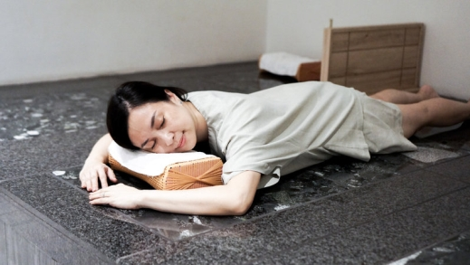
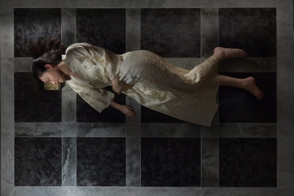
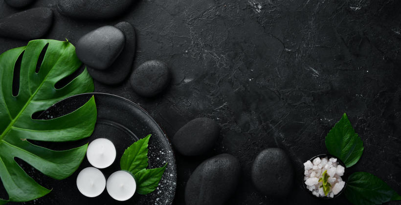
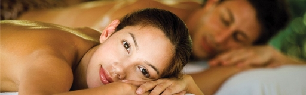

GANBANYOKU – UZDRAWIAJĄCA KĄPIEL BEZ WODY

Czy wiesz, że minerały wulkaniczne wykorzystywane są do zwalczania wielu dolegliwości już od ponad tysiąca lat? Na świecie sauna skalna Ganbanyoku jest uznawana za jeden z pięciu najskuteczniejszych rytuałów zdrowotno-relaksacyjnych. W Polsce to wciąż nowość.
Głębokie ciepło, które regeneruje organizm

Gan-ban-yoku to japońskie określenie skalnej kąpieli. Sercem sauny jest kamienna płyta, wytwarzana z wulkanicznej krzemionki. Pod wypływem jej ciepła, ciało powoli się rozluźnia i przyjemnie nagrzewa, uwalniając wszelkie toksyny.
Skała wulkaniczna w naturalny sposób emituje promienie podczerwone (infrared), których efekty zdrowotne zostały udowodnione naukowo. Długość fal promieniowania jest taka sama wewnątrz jaki i na zewnątrz ludzkiego ciała, działanie lecznicze przenika na 3-5 cm w głąb ciała. W ten sposób „głębokie ciepło” regeneruje organizm – wspomaga leczenie schorzeń, działa też prewencyjnie zapobiegając wielu chorobom.
Dobroczynna energia podczerwieni

Najbardziej znanym zastosowaniem promieni podczerwonych jest leczenie bólów mięśniowych, chorób stawowych, następstw kontuzji czy zwichnięć i zaburzeń krążenia w obrębie skóry. Ciepło wytwarzane przez promieniowanie podczerwone rozszerza żyły i wzmaga cyrkulację krwi. Lepsze krążenie krwi zwiększa ilość tlenu docierającego do uszkodzonych komórek przyspieszając proces leczenia.
Energia podczerwieni korzystnie wpływa także na układ sercowo naczyniowy, układ oddechowy, gospodarkę wodno-elektrolitową, czynność wydzielniczą nerek i wielu innych gruczołów. Poza tym obniża napięcie mięśni, zmniejsza pobudliwość nerwową oraz wrażliwość receptorową, przez co działa uspokajająco i przeciwbólowo. Zabieg stymuluje krążenie i przyspiesza metabolizm, nie przyspieszając przy tym rytmu serca.
60 minut relaksu na rozgrzanej skale

Zamknij oczy i zapomnij o całym świecie… Podczas sesji Ganbanyoku, która trwa 60 minut, leżysz pod przykryciem na specjalnym łóżku wyłożonym płytami skały wulkanicznej. Temperatura podczas zabiegu wynosi 42-44 °C. Przyjemne ciepło emanujące z kamieni wnika głęboko do wnętrza ciała, rozluźnia mięśnie, otwiera pory skórne i uwalnia toksyny.
To zupełnie inne doświadczenie, niż korzystanie z tradycyjnej sauny. Ciało nie poci się nadmiernie, nie odczuwasz gorąca, zmęczenia i duszności. Pot, który wydziela się podczas zabiegu, Japończycy nazywają "potem perłowym". To rodzaj kosmetycznego sebum z właściwościami bakteriobójczymi. To właśnie dlatego przez 2- 3 godziny po zabiegu nie jest zalecane korzystanie z prysznica – wystarczy dokładne wytarcie ciała ręcznikiem.
Przyjemność i bezpieczeństwo

Ganbanyoku to rytuał dla wszystkich! Ponieważ temperatura w pomieszczeniu jest dużo niższa niż w tradycyjnej saunie fińskiej, obciążenie organizmu jest zdecydowanie mniejsze. Gnbanyoku jest bezpieczne zarówno dla dzieci, jak i osób starszych. Po konsultacji z lekarzem z kąpieli skalnej mogą korzystać także osoby mające problemy z układem krążenia i sercem.
Poznaj korzyści Ganbanyoku

Podczas seansu ciepło emitowane z kamieni przenika ciało trzy razy głębiej niż ciepło sauny tradycyjnej, pobudzając i aktywując wiele przemian na poziomie komórkowym. Skalna kąpiel w Lewitarium dostarcza wyjątkowo przyjemnych doznań.
Działanie lecznicze Ganbanyoku:
- Wzmacnia organizm, poprawia odporność
- Regeneruje i odmładza
- Przyspiesza przemianę materii, ma działanie odchudzające – w czasie sesji traci się od 600 do 1000 kalorii!
- Poprawia wygląd skóry, redukuje cellulit
- Dotlenia i poprawia krążenia
- Działa detoksykująco – usuwa z organizmu dioksyny i metale ciężkie
- Zmniejsza napięcie mięśni
- Działa przeciwbólowo, podwyższa próg bólu
- Działa antydepresyjnie, wycisza, relaksuje i usuwa stres, dostarczając w zamian ujemnych jonów, zwanych „witaminami z powietrza”